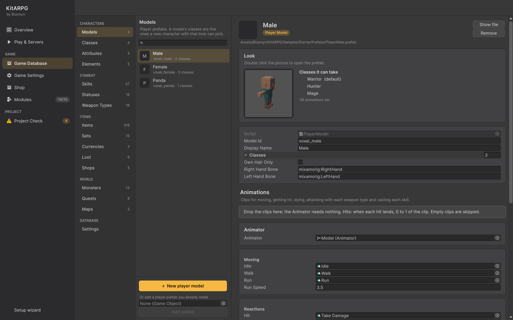

玩家模型
玩家模型是一个玩家预制体：玩家创建角色时选择的身体，带有该身体可以担任的职业、发型、装备在它身上的显示方式以及动画。本页介绍 PlayerModel 组件、模块化身体和装备部件、头发、动画，以及 New player model 向导。
玩家模型是什么
每个可玩角色都由一个玩家预制体生成。该预制体包含：
- Player Model（
PlayerModel）：随角色保存的 id、创建界面上的名称、该身体可以担任的职业以及手部骨骼。 - 每个玩家系统：网络、移动、背包、数值、技能、任务、聊天、好友、队伍、交易、公会、仓库、锻造、邮件、市场、商城、PvP。
- Modular Character（
ModularCharacter）：把身体区域替换为装备部件，并烘焙成一个网格。 - Equipment View（
EquipmentView）：显示穿戴的装备，盔甲在身上，武器在手中。 - Character Appearance View（
CharacterAppearanceView）：应用创建时选择的发型。 - Character Animations（
CharacterAnimations）：每个动画片段及其命中时机。 - Nameplate（
Nameplate）：头顶的名字。
角色保存其模型 id（appearance.model）和职业 id。示例中有三个模型：男性身体、女性身体（两者都可以是 Warrior、Hunter 或 Mage）以及只能是 Monk 的熊猫身体（voxel_panda）。
模型在编辑器中的位置

Game Database > Characters > Models 列出数据库中的每个玩家预制体。选择一个会显示预览（双击打开预制体）、它的 id、名称和职业，以及 Animations 卡片。如果预制体没有 Character Animations 组件，页面会提供 Add Character Animations。
数据库的 Player Models（playerModels）字段保存这些预制体。它们引用的一切都会被自动收集：来自模型的职业、来自职业的技能和初始物品等。
Player Model 组件
| 字段 | 作用 | 默认值 |
|---|---|---|
Model Id（modelId） |
随角色保存。第一次由 GameObject 的名称填入。以后修改它会使该模型的现有角色改为以列表中的第一个模型出现。 | 来自名称 |
Display Name（displayName） |
显示在创建界面上。留空则使用 GameObject 的名称。 | 空 |
Classes（classes） |
使用该模型的角色可以担任的职业。第一个是创建界面上的默认职业。 | 空 |
Own Hair Only（ownHairOnly） |
保留身体自己的头发、耳朵或角。创建界面不会为该模型提供发型。熊猫用它来保留耳朵。 | Off |
Right Hand Bone（rightHandBone） |
持握主手武器的骨骼名称。 | mixamorig:RightHand |
Left Hand Bone（leftHandBone） |
持握盾牌、副手武器和弓的骨骼名称。 | mixamorig:LeftHand |
服务器（MMO 中为 Login，单人模式中为游戏本身）会拒绝所选模型未列出的职业。没有职业的模型会出现在数据库的问题列表中。
如果你从数据库中移除某个模型，用它创建的角色不会被锁定：它们会以列表中的第一个模型出现。
模块化身体
装备通过替换整个身体区域来改变角色外观。身体被分成多个区域，每个区域都是共享骨骼上的一个独立蒙皮网格：
| 区域 | 身体网格名称 | 替换它的装备 |
|---|---|---|
| 头部 | Body_Head |
Head 栏位 |
| 胸部 | Body_Chest |
Chest 栏位 |
| 手部 | Body_Hands |
Hands 栏位 |
| 腿部 | Body_Legs |
Legs 栏位 |
| 脚部 | Body_Feet |
Feet 栏位 |
| 头发 | Body_Hair |
发型 |
| 背部 | 无 | Back 栏位（披风、背包、翅膀） |
装备部件是穿上装备后重新制作的整个区域，命名为 <Set>_<Region>：Knight_Chest、Short_Hair、Wizard_Head。由于部件替换了该区域，盔甲下的皮肤并不存在，不会有任何东西被绘制两次。身体背部什么都没有，因此背部部件只是额外添加。
身体可以缺少某些区域（光头的身体没有头发）；装备仍然可以放在那里。
Modular Character
| 字段 | 作用 | 默认值 |
|---|---|---|
Combine Meshes（combineMeshes） |
把所有区域烘焙成一个网格：每个角色只需一次蒙皮计算和一次绘制调用。需要在每个网格的导入设置中开启 Read/Write。装备相同的角色共享同一个烘焙网格。如果某个网格不可读，套件会记录警告并分开绘制各区域。 | On |
Head Gear Hides Hair（headGearHidesHair） |
头盔和帽子会隐藏头发。如果你的头部装备建模为覆盖在头发之上，请关闭它。单件装备可以通过物品上的 Keeps Hair 保留头发。 | On |
装备部件必须使用与身体相同的骨骼名称。部件的骨骼按名称匹配，因此绑定到其他骨骼的部件不会跟随身体。
每种身体的装备
一个物品有一个 Model 和可选的 Model Variants：每个玩家模型 id 对应一个不同的部件。示例中的盔甲默认使用男性部件，并有一个 voxel_female 变体，每个身体部件都有一个 _Panda 副本被指定为 voxel_panda 变体。参见外观与穿戴。
武器和盾牌
主手和副手栏位中的物品不是身体区域。它们是挂在 Player Model 指定的手部骨骼上的道具。每个物品设置由哪只手持握及其偏移（Left Hand、Hold Position、Hold Rotation）。副手中的第二把单手武器会以镜像方式显示。
Equipment View 也有 Model Id、Right Hand Bone 和 Left Hand Bone 字段。在玩家预制体上，它们取自 Player Model，因此你不需要设置。
固定服装
对于永远不换装备的角色（例如 NPC），在 Modular Character 旁添加 Character Outfit（CharacterOutfit），并在 Outfits（outfits）中列出模型。这些模型中每个命名为 <Set>_<Region> 的部件会在角色启动时穿到身体上。
发型
发型位于 Appearance Catalog 资源中（Create > KitARPG > Appearance Catalog），设置在每个玩家预制体的 Character Appearance View 的 Catalog（catalog）中。
| 字段 | 作用 | 默认值 |
|---|---|---|
Hair Styles（hairStyles） |
玩家在创建界面上可以选择的发型。 | 空 |
Id（id） |
随角色保存。修改它会改变使用它的角色的外观。 | 空 |
Display Name（displayName） |
显示在发型列表中。 | 空 |
Model（model） |
一个网格名为 <Something>_Hair 的模型。 |
None |
创建界面的发型列表以 Body default 开头，它保留身体自己的头发。带有 Own Hair Only 的模型会禁用该列表。
动画
Character Animations 列出角色播放的每个动画片段，以及每次攻击和技能生效的时刻。Animator 不需要设置：每个角色都使用套件的控制器（KitARPG/KitCharacter，位于 Runtime/Resources），由该组件替换其中的片段。不要编辑那个控制器。
服务器从这里读取命中时机，因此伤害在动画击中的那一刻生效。留空的片段不会播放，但其时机仍然有效。
| 字段 | 作用 | 默认值 |
|---|---|---|
Animator（animator） |
要驱动的 Animator。留空时在子对象中查找。没有 Animator 时什么都不播放，但命中仍会准时生效。 | None |
Idle（idle） |
站立不动。 | None |
Walk（walk） |
行走。留空则使用跑步。 | None |
Run（run） |
跑步。 | None |
Run Speed（runSpeed） |
跑步片段所对应的每秒米数。更快或更慢的移动会让它播放得更快或更慢。 | 3.5 |
Hit（hit） |
受到伤害时播放，正在攻击或施法时除外。 | None |
Death（death） |
死亡。 | None |
Stunned（stunned） |
眩晕时循环播放。 | None |
Attack（attack） |
空手，或使用 Weapons 中未列出的武器类型时的攻击。 | 一次命中，位于 0.5 |
Weapons（weapons） |
每种武器类型一个攻击：Weapon Type 和 Attack。 | 空 |
Cast（cast） |
施放或引导 Skills 中未列出的技能时循环播放。 | None |
Skill（skill） |
使用 Skills 中未列出的技能。带有 Use Weapon Attack 的技能改为播放武器的攻击。 | 一次命中，位于 0.5 |
Skills（skills） |
每个技能：Skill、Cast（施法时循环；留空使用默认施法）和 Use（施法结束时；其效果在命中帧生效）。 | 空 |
Upper Body Mask（upperBodyMask） |
攻击、技能和施法在双腿继续行走时所驱动的骨骼：通常是脊柱、手臂和头部。用 Create > Avatar Mask 创建一个。留空则在全身播放动作。 | None |
Mask Only While Moving（maskOnlyWhileMoving） |
只对移动中开始的动作使用遮罩；静止时在全身播放。关闭：始终使用遮罩，因此双腿保持待机动作。 | On |
Mask Casts（maskCasts） |
施法和引导也使用遮罩。 | On |
Moving Speed（movingSpeed） |
角色从多少米每秒开始算作在移动。 | 0.3 |
每次攻击和技能使用都是一个动作动画：
| 字段 | 作用 | 默认值 |
|---|---|---|
Clip（clip） |
在有 Animator 的角色上播放。 | None |
Duration（duration） |
正常速度下持续的秒数。0 使用片段的长度（没有片段时为 0.6 秒）。 |
0 |
Hits（hits） |
每次命中生效的时刻，从 0（开始）到 1（结束）。伤害在它们之间分摊：0.3 和 0.7 两次命中各造成一半伤害。 | 一次，位于 0.5 |
Sound（sound） |
开始时播放。 | None |
Full Body（fullBody） |
即使在移动中也在全身播放，用于跳跃和旋转。只在有上半身遮罩时有意义。 | Off |
当攻击速度使攻击快于片段时，片段会加速以适应。移动会打断攻击或施法；已发射的投射物仍会到达。
创建新的玩家模型
New player model 向导分四步把一个 3D 模型变成可玩的身体。
-
打开 Game Database > Models 并按 + New player model。向导在右侧打开。
-
Model。 从 Project 窗口把 FBX 或预制体拖到字段中。向导会告诉你：
- 它是否有 Animator（"No Animator" 表示它不会播放动画）；
- 骨骼是 Humanoid（武器放在它的手中，它可以共享套件的动画）还是 Generic（使用为该骨骼制作的动画，之后设置手部骨骼）；
- 它是否没有蒙皮网格（这样装备就无法替换身体部位）。
给它一个 Display name 和一个 Id。id 随角色保存；以后修改它会破坏用它创建的角色。如果身体有自己的头发、耳朵或角，勾选 Own hair only。
-
Classes。 勾选该身体可以担任的职业。第一个勾选的是默认职业。在 New classes 下，+ New class 添加一个随该模型创建的职业，可以是空的，也可以是另一个职业的副本（copy of）。每个新职业需要唯一的名称。
-
Animations。 在 Start from a model 中，选择一个现有模型来复制它的动画（片段、命中时机、按武器和按技能）及其外观目录。Copy its animations 和 Copy the game's own components on it (not the kit's) 默认都开启。当一个模型是人形而另一个不是时，向导会发出警告，因为片段可能无法播放。选择 Nothing, start empty 时，你之后再填入片段；命中仍会准时生效。对于人形骨骼，Use an upper body mask（默认开启）让它可以边走边攻击和施法；遮罩字段留空则使用套件的遮罩。
-
Create。 检查 Prefab folder（位于
Assets内，默认是数据库数据文件夹旁的Prefabs文件夹），阅读将要创建内容的摘要，然后按 Create player。
预制体会带上所有玩家系统被创建，加入数据库的 Player Models；新职业创建在数据库旁的 Classes 文件夹中并加入 Classes；新模型会在 Game Database 中打开以供编辑。
如果你手动制作了玩家预制体，请改为把它拖到 Models 页面的 Add prefab 中。
让装备适配新身体
要让装备在你的身体上替换：
- 把身体拆分为名为
Body_Head、Body_Chest、Body_Hands、Body_Legs、Body_Feet以及可选的Body_Hair的蒙皮网格。 - 把每个装备部件制作为穿上装备后的完整区域，绑定到同一骨骼（相同的骨骼名称），命名为
<Set>_<Region>。 - 在每个网格的导入设置中开启 Read/Write，或关闭 Combine Meshes。
- 在每个物品上，把 Model 设为包含该部件的模型；如果默认模型适配的是其他身体，则添加一个以你的模型 id 为键的 Model Variants 条目。
单人模式和 MMO
模型在两种模式下的工作方式相同。在 MMO 中，Login 服务不使用 Unity 创建角色，因此它从你的数据库导出的 gamedata.json 中读取模型及其职业列表（Play & Servers 启动服务时会自动导出，构建时则使用 KitARPG > Export Game Data for Services）。新模型或添加到模型上的职业需要重新导出，Login 才会接受。
无界面的地图服务器不绘制任何东西，因此 Equipment View 会在那里自行关闭；装备 id 仍会传送到每个客户端，由客户端绘制。
提示
- 当你的骨骼是人形时，从示例模型复制动画。你会一次得到所有攻击和技能的时机，之后可以再替换片段。
- 保持 Combine Meshes 开启。在拥挤的城镇中它能节省最多的开销。
- 每种身体类型一个模型并使用相同的骨骼，可以让每个套装只需为每个部件准备一个适配的变体，就能用于每个身体。
常见错误
- 装备显示为白色或不替换。 部件的网格名称没有以区域名结尾（
_Chest、_Head……），或者它的骨骼名称与身体的不同。 - Console 中出现 "is not readable" 警告。 在网格的导入设置中开启 Read/Write。
- 武器漂浮在手旁边。 Player Model 上的手部骨骼名称与骨骼不匹配，或物品的 Hold Position 不对。
- 更新后角色换了身体。 模型 id 被修改或模型被移除；它们会回退到第一个模型。